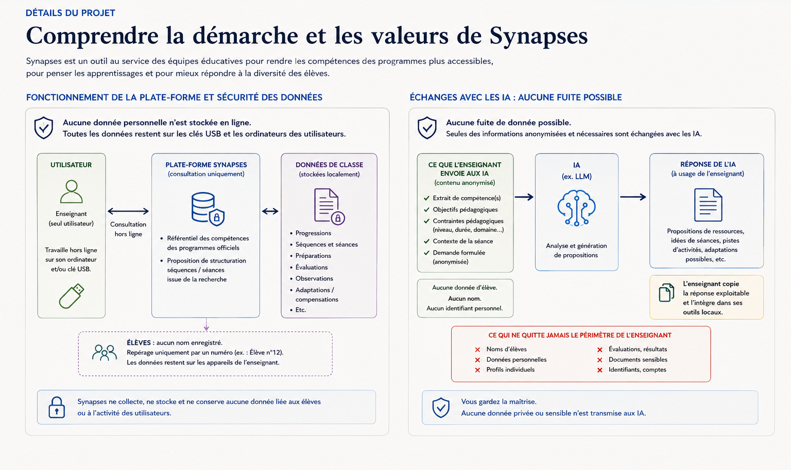

Synapses · Grand Planificateur pédagogique
Détails du projet
Synapses est un projet personnel de conception d'outils pédagogiques visant à rendre les programmes plus lisibles, à relier les apprentissages entre eux et à explorer, avec prudence, la place que l'intelligence artificielle peut prendre dans l'Éducation nationale.
Projet non institutionnelProgrammes · compétences · progressionIA comme outil, pas comme pilote
Qui porte le projet ?
À l'origine de Synapses
Qui porte le projet ?
Synapses est porté par Vincent, sous le nom Cskrh13, enseignant spécialisé. Le projet est né d'une réflexion de terrain autour d'une question très concrète : comment faciliter la pensée pédagogique lorsqu'il faut adapter les situations d'apprentissage, envisager des compensations et répondre aux besoins propres d'un élève ?
Cette intention rejoint une volonté plus large : intégrer plus simplement les pratiques de l'école inclusive au service du public, en donnant aux professionnels des repères et des outils pour penser les réponses plutôt que des solutions toutes faites.
L'ambition n'est pas de produire un logiciel qui décide à la place des professionnels, mais un environnement qui aide à organiser, relier, questionner, adapter et partager.
Une équipe de testeurs issue de l'ASH
Des professionnels issus de l'Adaptation scolaire et de la Scolarisation des élèves en situation de Handicap ont accepté de contribuer aux tests et aux retours d'usage, afin de confronter Synapses aux réalités de l'école inclusive.
Une équipe de testeurs issue de l'enseignement ordinaire
Une seconde équipe, issue de l'enseignement ordinaire, participe également aux essais. Cette diversité de regards permet de vérifier que l'outil reste utile, compréhensible et pertinent dans des contextes professionnels différents.
Ces deux équipes de testeurs ont accepté d'accompagner le développement du projet. Leurs retours ont vocation à nourrir l'évolution de Synapses, dans une démarche de co-construction et d'amélioration continue.
Pourquoi ?
La démarche et les objectifs
Le cœur du projet est de rendre visible ce qui reste souvent dispersé entre textes, documents, progressions et pratiques.
Lire les programmes autrement
- Consulter les compétences dans une structure claire.
- Conserver la référence aux sources plutôt que multiplier les reformulations.
- Passer d'un niveau, d'un domaine ou d'une compétence à l'autre.
Construire une continuité
- Relier les compétences, les séquences et les séances.
- Visualiser les antériorités et les prérequis lorsqu'ils sont explicitement renseignés.
- Penser la progression comme un parcours, y compris dans une logique de spirale ascendante.
Réduire la friction
Préparer une programmation demande souvent de naviguer entre de nombreux fichiers et outils. Synapses cherche à centraliser les informations utiles sans effacer la liberté pédagogique.
Penser l'école inclusive
Synapses veut faciliter l'intégration des pratiques inclusives dans la réflexion quotidienne. Le point de départ n'est pas de faire entrer l'élève dans un modèle unique, mais de partir de ses besoins pour interroger les obstacles rencontrés, les adaptations possibles et les compensations pertinentes.
L'outil a vocation à aider à documenter et structurer cette réflexion, tout en laissant aux professionnels la responsabilité de l'analyse et des décisions.
Créer un espace de discussion
Le feedback fait partie de la méthode : un outil pédagogique ne peut pas être considéré comme terminé uniquement parce qu'il fonctionne techniquement.
Comment ?
La méthode Synapses
1. Partir des sources
Les données constituent le socle : programmes, compétences et structures de programmation sont séparés afin d'éviter de confondre le contenu de référence avec son affichage.
2. Structurer sans inventer
Les relations entre compétences, séquences et séances doivent provenir des données renseignées. Lorsqu'une relation n'est pas connue, elle n'a pas vocation à être fabriquée pour rendre une visualisation plus spectaculaire.
3. Partir des besoins pour penser les adaptations
Lorsqu'une situation pose difficulté, Synapses cherche à aider à organiser la réflexion : identifier les besoins propres à l'élève, repérer les obstacles, envisager des adaptations, des aménagements ou des compensations, puis conserver la trace des choix effectués. L'objectif n'est pas d'automatiser une réponse individuelle, mais de rendre la démarche plus accessible et plus cohérente.
4. Rendre visible
Répertoires, filtres, frises, programmations et cartographies permettent de changer d'échelle : voir un détail, puis retrouver sa place dans un ensemble.
5. Tester et corriger
Les erreurs, incohérences et retours utilisateurs sont traités comme des informations utiles. La robustesse du projet dépend autant de la qualité des données que de la qualité du dialogue autour de l'outil.
6. Garder l'humain responsable
Les choix pédagogiques restent des choix professionnels. Synapses peut assister la préparation et la réflexion ; il ne prétend pas remplacer l'expertise, le contexte de classe ou le jugement de l'enseignant.
« L'objectif n'est pas d'automatiser la pédagogie, mais de donner davantage de visibilité aux informations qui permettent de la penser. »Principe directeur de Synapses
Sécurité et usage des IA
Deux schémas pour comprendre le fonctionnement de Synapses
Les données de travail restent sur les clés USB et les ordinateurs des utilisateurs. Synapses propose des compétences issues des programmes ainsi qu'une proposition de structuration des séances et séquences issue de la recherche. Lors d'un échange avec une IA, seules les informations nécessaires, anonymisées et formulées par l'enseignant sont envoyées.

Principe central : aucun nom d'élève, aucune donnée personnelle ou sensible n'est transmise. Les élèves sont repérés localement par un numéro. Les propositions de l'IA ne sont pas automatiquement intégrées : l'enseignant choisit ce qu'il souhaite copier et réutiliser dans ses propres outils locaux.
Intelligence artificielle
Les enjeux pour l'Éducation nationale
Une technologie qui impose des questions avant d'imposer des réponses
L'IA peut accélérer certaines tâches : exploration documentaire, aide à la structuration, génération de premières propositions, détection d'incohérences ou adaptation de formes de présentation. Mais sa rapidité ne garantit ni la pertinence pédagogique ni l'exactitude.
Traçabilité
Un résultat utile doit pouvoir être relié à ses sources et compris. Dans un contexte éducatif, une réponse impossible à vérifier ne doit pas devenir une autorité implicite.
Souveraineté et données
Le choix des outils, l'hébergement et la circulation des données doivent être pensés avec attention, en particulier lorsque les usages concernent des élèves, des personnels ou des productions pédagogiques.
Biais et uniformisation
Une IA peut reproduire des biais ou favoriser des réponses moyennes et standardisées. Le risque n'est pas seulement l'erreur : c'est aussi l'appauvrissement progressif de la diversité des pratiques.
Compétences professionnelles
L'enjeu est d'apprendre à utiliser l'IA avec esprit critique : formuler une demande, contrôler une sortie, identifier une invention, comparer avec des sources et assumer la décision finale.
Inclusion et personnalisation
L'IA pourrait aider à explorer des pistes d'adaptation ou de compensation à partir d'une situation décrite. Mais elle ne peut pas connaître l'élève à la place des professionnels ni décider de ce qui est pertinent pour lui. Son rôle doit rester celui d'un outil de réflexion, sous contrôle humain, attentif au contexte et protecteur des données.
Position de Synapses : l'IA peut être un assistant de travail et un accélérateur de prototypage, y compris pour explorer des pistes d'adaptation ou de compensation. Elle ne doit ni masquer l'origine des informations, ni inventer des relations pédagogiques, ni produire automatiquement une réponse à la place de l'analyse professionnelle. La décision reste humaine, contextualisée et orientée vers les besoins réels de l'élève.
La suite
Un projet en construction
Synapses continue d'évoluer autour d'un principe simple : chaque nouvelle fonctionnalité doit répondre à un besoin réel, rester compréhensible et pouvoir être discutée.
Participer à l'amélioration
Les retours permettent d'identifier les bugs, les incohérences de données et les améliorations souhaitables.
Accéder à l'espace Feedback →
Revenir au référentiel
Le référentiel reste le point d'entrée pour explorer les niveaux, disciplines, domaines et compétences disponibles dans Synapses.
Retour à l'accueil →